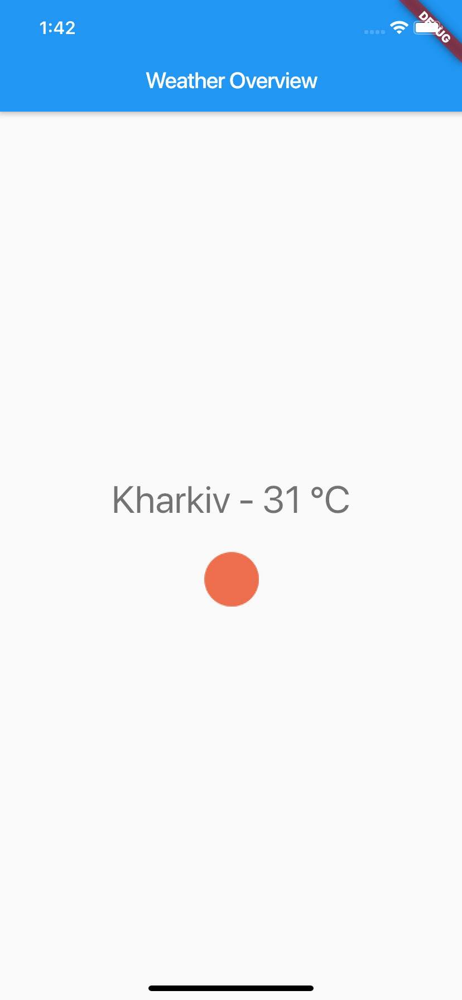
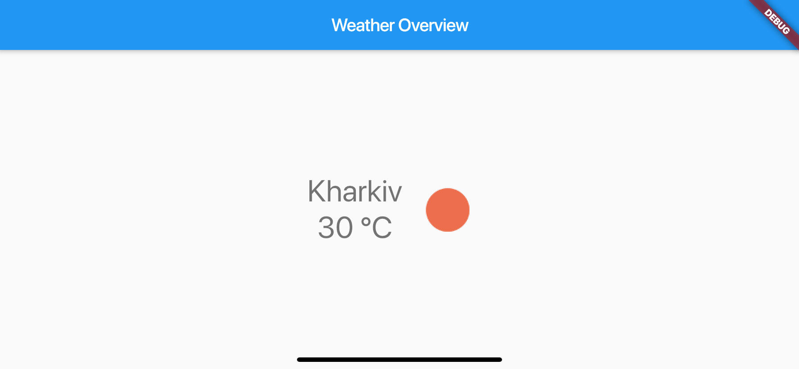

In this lecture we will implement an application which communicate with Weather API and display weather for Kharkiv region.
After this lecture you will learn:
Expected design:

We will get weather data from openweathermap.org using next url -> https://api.openweathermap.org/data/2.5/weather?q=Kharkiv&units=metric&APPID=1ea55013049215603ece3fee22806975
It contains a lot of data, but I left only needed:
{
"weather": [
{
...
"icon": "01d"
}
],
"main": {
"temp": 31,
...
},
...
"name": "Kharkiv",
}
Let translate given JSON to next model:
class Weather {
final int temperature;
final String locationName;
final String iconUrl;
Weather(this.temperature, this.locationName, this.iconUrl);
}
Let build a widget that will contain Weather data and render it:
class WeatherContainer extends StatelessWidget {
final Weather weather;
WeatherContainer({Key key, @required this.weather})
: assert(weather != null),
super(key: key);
@override
Widget build(BuildContext context) {
return Column(
children: <Widget>[
Text(
'${weather.locationName} - ${weather.temperature} °C',
style: Theme.of(context).textTheme.display1,
textAlign: TextAlign.center,
),
Image.network(weather.iconUrl),
],
);
}
}
And let display it using mock data:
void main() => runApp(MyApp());
class MyApp extends StatelessWidget {
// This widget is the root of your application.
@override
Widget build(BuildContext context) {
final weather =
Weather(30, 'Kharkiv', 'http://openweathermap.org/img/wn/10d@2x.png');
return MaterialApp(
title: 'Flutter Demo',
theme: ThemeData(
primarySwatch: Colors.blue,
),
home: Scaffold(
appBar: AppBar(
title: Text('Weather Overview'),
),
body: Center(
child: WeatherContainer(
weather: weather,
),
),
),
);
}
}
Fetching data from the internet is necessary for most apps. Luckily, Dart and Flutter provide tools, such as the http package, for this type of work.
This recipe uses the following steps:
http package.http package.The http package provides the simplest way to fetch data from the internet.
To install the http package, add it to the dependencies section of the pubspec.yaml.
dependencies:
http: 0.12.0+2
In this example, fetch a current weather from the OpenWeather using the http.get() method.
class WeatherProvider {
Future<http.Response> getCurrentWeather() async {
final response = await http.get(
'https://api.openweathermap.org/data/2.5/weather?q=Kharkiv&units=metric&APPID=1ea55013049215603ece3fee22806975');
return response;
}
The http.get() method returns a Future that contains a Response.
Future is a core Dart class for working with async operations. A Future object represents a potential value or error that will be available at some time in the future.http.Response class contains the data received from a successful http call.async and await keywords provide a declarative way to define asynchronous functions and use their results. Remember these two basic guidelines when using async and await:async before the function body.await keyword works only in async functions.An async function runs synchronously until the first await keyword. This means that within an async function body, all synchronous code before the first await keyword executes immediately.
While it's easy to make a network request, working with a raw Future<http.Response> isn't very convenient. To make your life easier, convert the http.Response into a Dart object.
First, create a Weather class that contains the data from the network request. It includes a special constructor that creates a Weather from JSON. Let extend out Weather class with this constructor:
class Weather {
final int temperature;
final String locationName;
final String iconUrl;
Weather(this.temperature, this.locationName, this.iconUrl);
Weather.fromJson(Map<String, dynamic> json)
: temperature = json['main']['temp'],
locationName = json['name'],
iconUrl = _generateIconUrl(json['weather'][0]['icon']);
static String _generateIconUrl(String icon) {
return 'https://openweathermap.org/img/wn/$icon@2x.png';
}
}
Now, use the following steps to update the getCurrentWeather() function to return a Future<Weather>:
Map with the dart:convert package.Map into a Weather using the fromJson() constructor.class WeatherProvider {
Future<Weather> getCurrentWeather() async {
final response = await http.get(
'https://api.openweathermap.org/data/2.5/weather?q=Kharkiv&units=metric&APPID=1ea55013049215603ece3fee22806975');
if (response.statusCode == 200) {
return Weather.fromJson(json.decode(response.body));
} else {
throw Exception('Failed to load weather data');
}
}
}
Hooray! Now you've got a function that fetches a weather data from the internet.
To fetch the data and display it on screen, use the FutureBuilder widget. The FutureBuilder widget comes with Flutter and makes it easy to work with async data sources.
You must provide two parameters:
Future you want to work with. In this case, call the getCurrentWeather() function.class WeatherOverview extends StatelessWidget {
final _weatherProvider = WeatherProvider();
@override
Widget build(BuildContext context) {
return Scaffold(
appBar: AppBar(
title: Text("Weather Overview"),
),
body: Center(
child: FutureBuilder<Weather>(
future: _weatherProvider.getCurrentWeather(),
builder: (context, snapshot) {
if (snapshot.hasData) {
return WeatherContainer(weather: snapshot.data);
} else if (snapshot.hasError) {
return Text("${snapshot.error}");
}
return CircularProgressIndicator();
},
),
),
);
}
}
Let me introduce a widget that can handle it - OrientationBuilder
OrientationBuilder(
builder: (context, orientation) {
if (orientation == Orientation.portrait) {
return Text('portrait');
} else {
return Text('lanscape');
}
},
);
And your homework will extend WeatherContainer widget and render it in landscape orientation:
